Chambre d'hôtes à Cuesmes, Mons
Entre ville et campagne,La Chrysalide
Pascal et Martine vous accueillent dans leur maison familiale de charme, au calme, à 4 km de Mons : une seule chambre, un jardin fleuri de lavandes et le RAVel à quelques mètres de la porte.
- 1 chambre, de 1 à 3 personnes + bébé
- dès 90 € la nuit
- label Bienvenue vélo
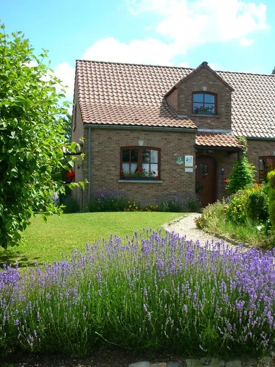
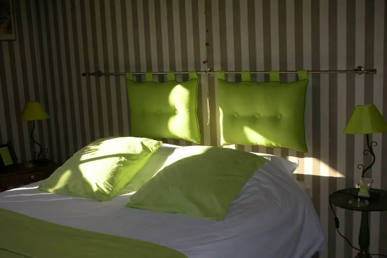
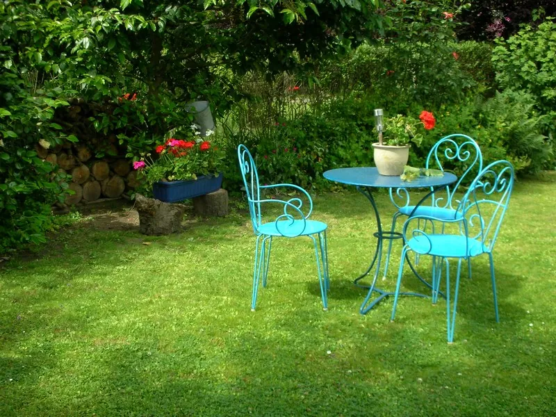
- 4 km de Mons
- RAVel L98 à quelques mètres
- 1 seule chambre, toute la tranquillité
- tout de plain-pied
- gratuits Wi-Fi et parking
La chambre
Une seule chambre, rien que pour vous.
Le fait de ne disposer que d'une chambre vous garantit tranquillité et qualité durant votre séjour. Agréable en hiver, fraîche les jours de grand soleil.
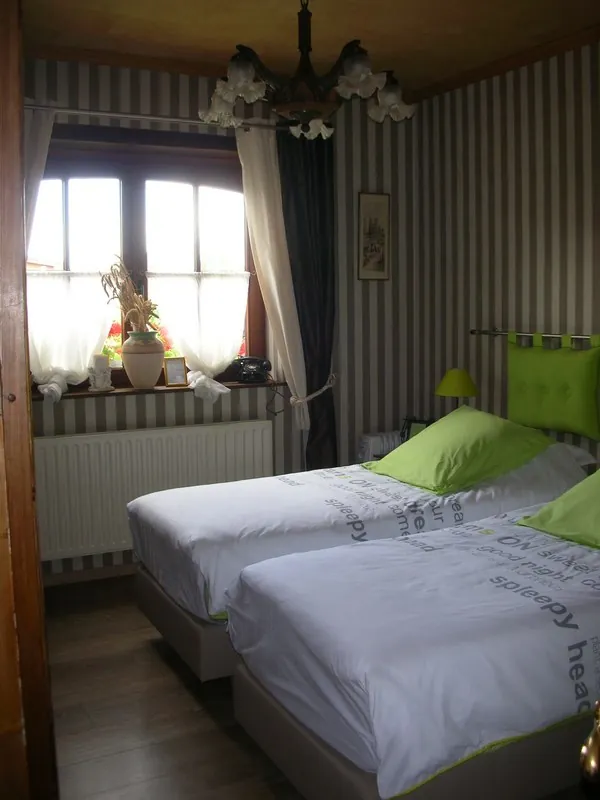
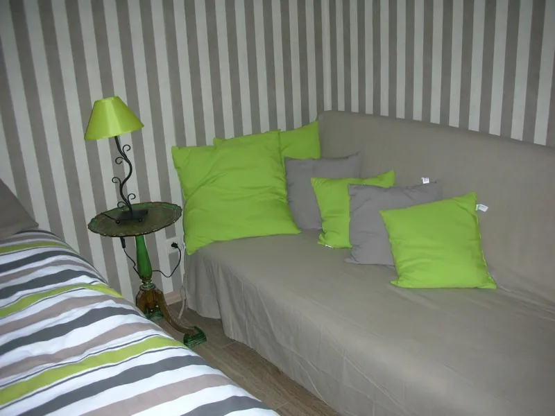
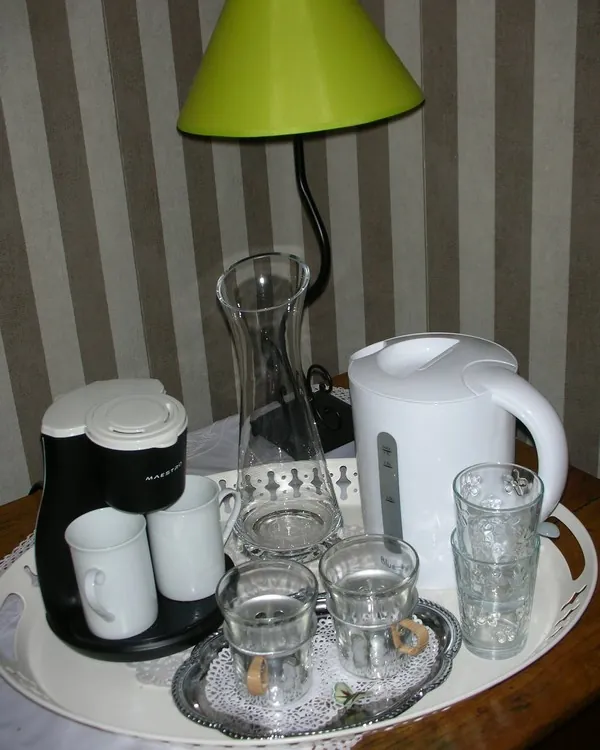
Meublée avec soin, tout de plain-pied.
Une chambre d'une capacité de 1 à 3 personnes, plus un bébé. Le choix des lits s'adapte : un lit double, ou des lits simples et un lit bébé.
Un plateau de courtoisie vous est offert. Vos hôtes restent attentifs au petit plaisir selon les circonstances ou les saisons.
- 1 à 3 personnes + bébé
- Lit double ou lits simples
- Lit bébé
- Wi-Fi gratuit
- Plateau de courtoisie
- Mini bar
- Label « bébé tendresse »
- Non-fumeur
La salle de bain
Spacieuse, privative, annexée à la chambre : bain-douche, WC, sèche-cheveux et quelques petits plus à découvrir sur place.
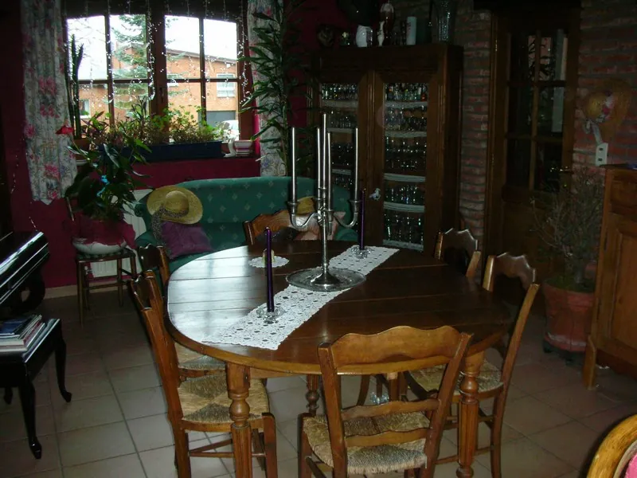
Le matin
Le petit déjeuner, fait maison au fil des saisons.
Copieux et préparé avec soin, il vous est servi au living, avec vue sur le jardin. Si le temps est beau et que vous le souhaitez, on le prend sur la terrasse.
- Produits faits maison, suivant les saisons
- Le « Chrysalide Sucré Salé », recommandé par nos visiteurs
- Pas de table d'hôtes, mais le living et la terrasse sont à vous pour savourer vos découvertes gastronomiques
La maison
« Parce que la vie est une éternelle Chrysalide. »
« Nous l'avons imaginée, dessinée, construite, décorée ; nous lui avons ajouté un jardin verdoyant et de toutes les couleurs. […] La Chrysalide est une maison en constante renaissance où il fait bon vivre. »
Pascal et Martine
Le jardin
Havre de paix, lieu de jeux.
Les lavandes, en place depuis 20 ans, sont notre fleuron d'accueil. À l'arrière : un coin pelouse, un potager, un verger et un poulailler.
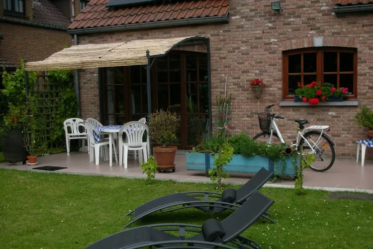
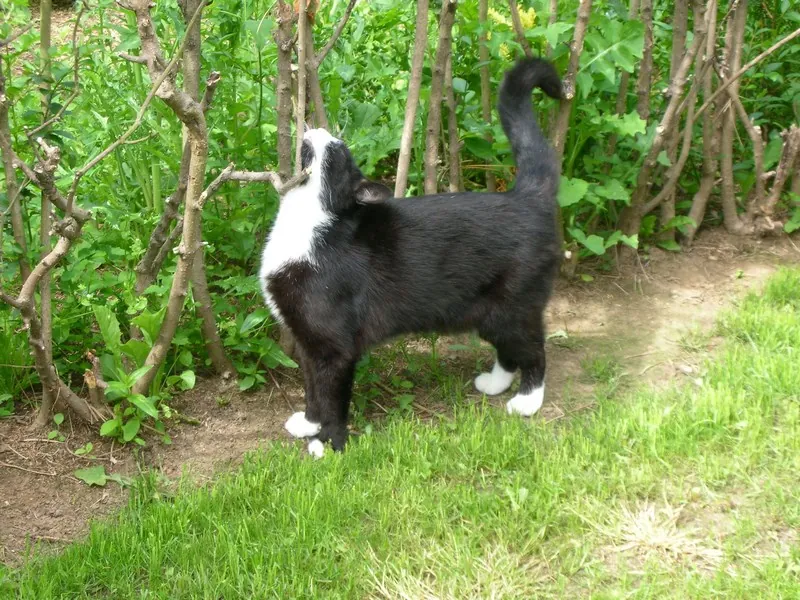
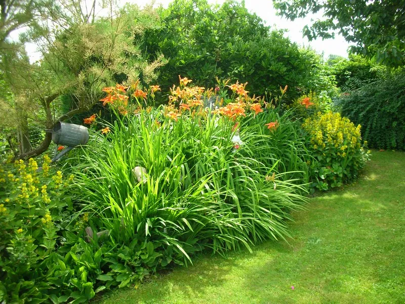
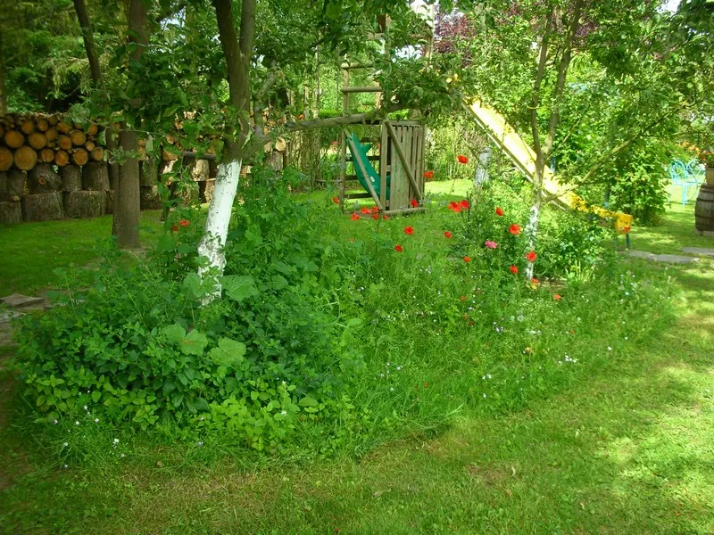
Pour les plus jeunes
Loisirs à volonté sous le regard des parents : pelouse, portique avec balançoires, toboggan, et des jeux de société pour tout âge.
Pour les plus grands
Tennis de table, pétanque à quelques mètres, chaises longues pour lire ou prendre le soleil. Sur demande, vous pouvez organiser votre barbecue.
Au potager
Pourquoi ne pas glaner quelques fruits ? Fruits et légumes sont cultivés en respectant l'environnement, avec des solutions naturelles.
Nos tarifs
Un prix par nuit, toute l'année.
Prix de base par nuitée, à partir de : ils peuvent varier selon les saisons et les partenaires, et les formules séjour incluent parfois le petit déjeuner.
Taxe de séjourTaxe communale en supplément : 3 € par personne et par nuit.
Petit déjeunerLe « Chrysalide Sucré Salé », recommandé par nos visiteurs : à réserver.
AcompteDemandé à la confirmation, par virement sur le compte communiqué par e-mail.
PaiementPar virement ou en espèces. Les cartes bancaires ne sont pas acceptées.
Les plus, compris
- Parking aisé et gratuit, sur la propriété ou en rue
- Wi-Fi gratuit pour tous
- Prêt de vélo sur réservation
- Plateau de convivialité dans la chambre à votre arrivée
- Mini bar pour vos produits frais
Les offres « Papillon »
- Bienvenue vélo, adaptée à tous les cyclistes
- Le Grand-Hornu, site UNESCO : charbonnages, MAC's et CID
- Papillon Chrysalide, avec une visite guidée de Mons
Les packages « Papillon » sont proposés à certaines périodes : demandez-les en réservant.
Réserver
Vos dates, votre cocon.
Choisissez l'arrivée et le départ, dites combien vous serez et quel couchage vous préférez : Pascal et Martine vous répondent avec la disponibilité et le prix exact.
Ils y ont dormi.
Autour de la maison
Au pays des terrils, sur les pas de Van Gogh.
Cuesmes, c'est un site naturel et culturel : loger chez nous, c'est découvrir le patrimoine sur place, à pied, à vélo, à moto ou en voiture.
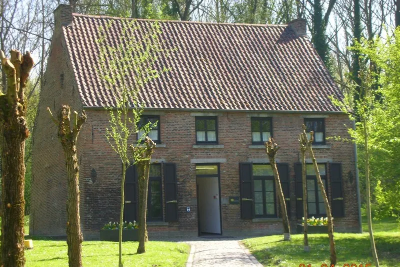
La maison Van Gogh
Arrivé au Borinage à la fin du 19e siècle, Vincent s'installe à Cuesmes : c'est ici qu'il décide de son destin d'artiste.
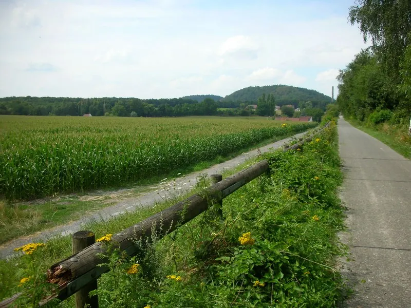
Le RAVel L98
Et les sentiers de Grande Randonnée (GR412). Labellisés « Bienvenue vélo » depuis 2016 : les deux-roues sont accueillis avec le plus grand soin.
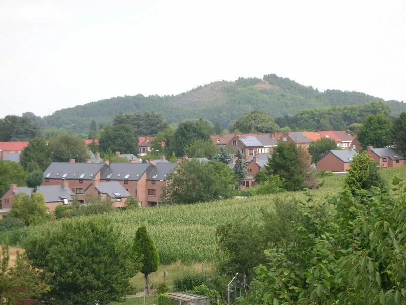
Terrils et bois
Le mont Héribus, le site du Levant, les terrils de Ciply et du Crachet, et le bois de la Malogne, classé Patrimoine exceptionnel de Wallonie.
Et aussi
- Le beffroi, patrimoine mondial de l'UNESCO, vue à 360°
- La collégiale Sainte-Waudru
- Le Doudou, chaque année à la Trinité
- Spiennes et ses minières de silex néolithiques
- Pairi Daiza à une demi-heure
Nous rejoindre
Venir chez nous, c'est facile.
GSM
0497 10 87 47Adresse
Famille Williame
Rue de l'Espinette 231
7033 Cuesmes (Mons), Belgique
Accès
- À moins de 5 km de la gare de Mons, où des taxis attendent
- Bus TEC tous les quarts d'heure, arrêts « Grande Barre » ou « Espinette »
- Bruxelles et Lille à environ 1 h, Paris à 2 h 30
- Aéroport de Charleroi à 50 km, environ 35 minutes
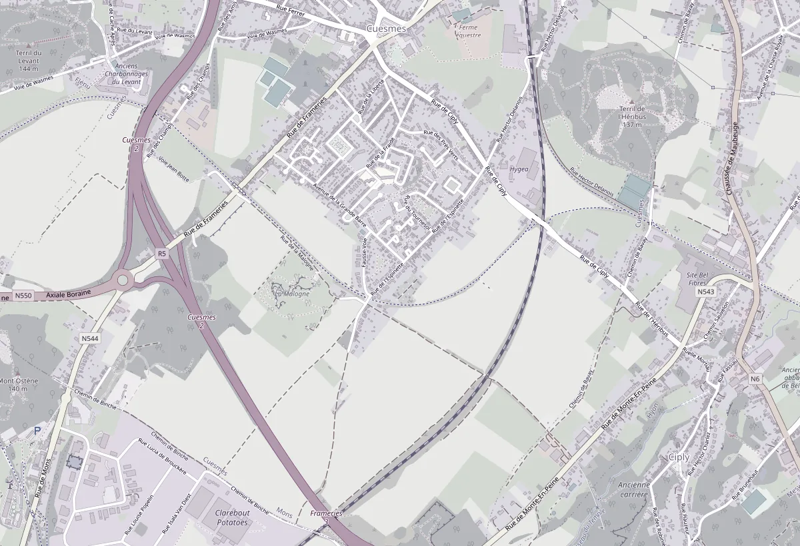
Itinéraire © OpenStreetMap